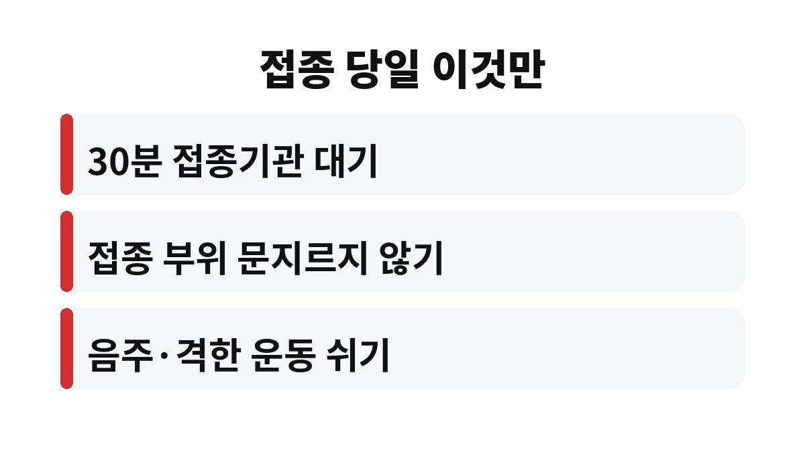
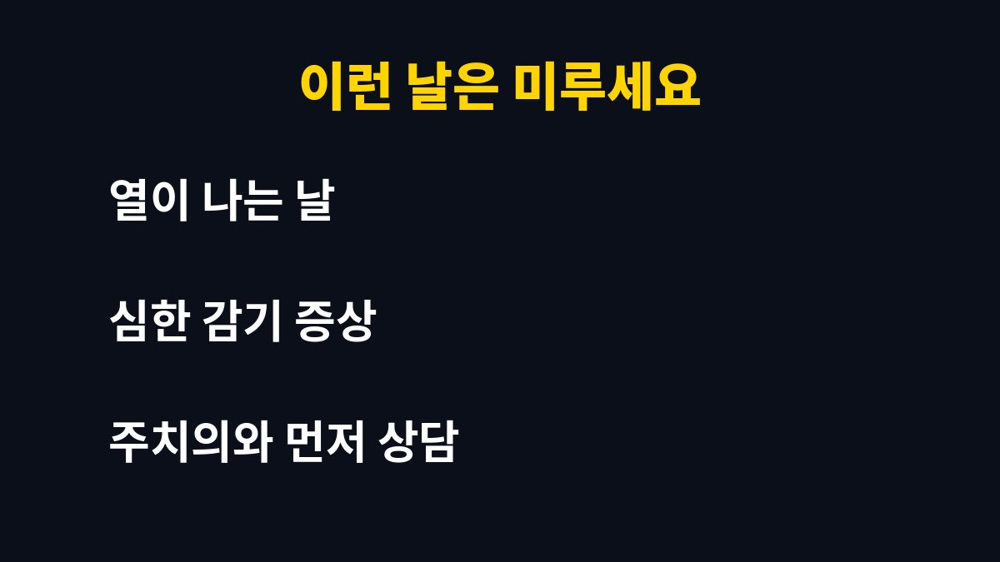

독감 예방접종 후 항체가 충분히 만들어지기까지는 보통 2주 안팎이 걸립니다. 11월인데 아직 안 맞았다면, 그리고 부모님이나 아이를 챙겨야 하는 입장이라면 이 2주를 어떻게 버틸지가 진짜 숙제인 셈이죠.
많은 분이 "주사 맞았으니 오늘부터 안전하다"고 생각하세요. 그런데 몸이 방어 준비를 마치는 데는 시간이 필요합니다. 일반적으로 접종 후 2주 정도 지나야 항체가 충분히 형성된다고 알려져 있어요. 그러니까 접종 직후 며칠은 아직 무방비에 가깝다는 뜻입니다.
그래서 독감이 한창 퍼지기 전에 맞는 게 중요합니다. 겨울이 코앞인 11월은 "아직 괜찮겠지" 하다가 놓치기 딱 좋은 시기죠. 맞는 날부터 2주를 계산해서, 그 기간엔 손 씻기와 마스크를 평소보다 더 챙기시길 권합니다.

접종을 마치면 바로 일어나고 싶은 마음이 들죠. 하지만 드물게 나타나는 급성 알레르기 반응을 살피기 위해 접종기관에서 15~30분 정도 머물며 지켜보는 것이 권장됩니다. 어지럽거나 숨이 차거나 두드러기가 올라오면 바로 의료진에게 알려야 해요.
이 시간을 건너뛰고 장거리 운전을 하거나 곧장 운동하러 가는 분들이 있는데, 그건 추천하기 어렵습니다. 커피 한 잔 마시며 쉬어 간다고 생각하면 마음이 훨씬 편해요.
가장 많이 받는 질문이 이거예요. 샤워는 가볍게 해도 대체로 문제없습니다. 다만 접종 부위를 세게 문지르는 건 피하세요. 반대로 과음과 격한 운동은 당일에는 쉬는 쪽이 안전합니다. 몸이 면역 반응을 만드느라 이미 바쁘거든요.
접종 부위가 뻐근하거나 살짝 열감이 있고, 미열과 피로감이 하루이틀 이어지는 것도 흔한 반응입니다. 보통은 며칠 안에 가라앉아요. 다만 고열이 계속되거나 증상이 심해지면 참지 말고 병원에 연락하세요.
열이 있거나 심한 감기 증상으로 몸이 처진 날은 접종을 미루는 것이 일반적인 안내입니다. 과거에 백신 접종 후 심한 알레르기 반응을 겪은 적이 있다면 반드시 미리 의료진과 상담하세요. 달걀 알레르기 같은 경우도 사전에 말씀드리는 게 안전합니다.
| 항체 형성 | 접종 후 2주 안팎 |
| 접종 후 대기 | 15~30분 |
| 효과 지속 | 대략 6개월 안팎 |

만 65세 이상 어르신은 국가 무료 접종 대상이라 가까운 보건소나 지정 의료기관에서 맞을 수 있어요. 대상과 기간은 지역마다 조금 다를 수 있으니 방문 전에 확인하는 게 좋습니다. 효과는 대략 6개월 안팎이라 늦가을에 맞으면 겨울 유행 시기를 든든하게 지나갈 수 있습니다.
여러분은 올해 독감 주사 맞으셨나요? 가족 중에 아직 안 맞은 분이 있다면 이 글을 공유해 주세요. 도움이 되셨다면 구독하고 다음 건강 소식도 받아보세요!
본 글은 일반적인 건강 정보이며 개인 상태에 따라 다를 수 있으니, 접종 전후 궁금한 점은 반드시 전문의와 상담하세요.